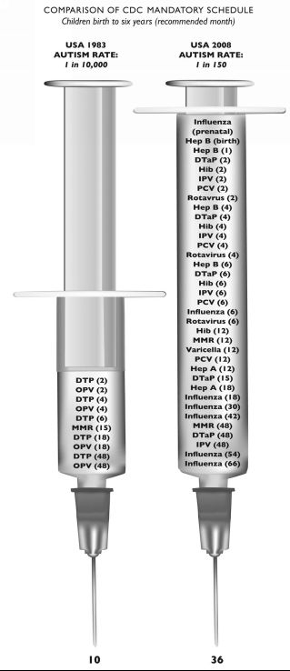

Chapter Six:
Health Wars: Drugs and Vaccines: America’s new opium war
The deadly, often crippling Anglo-American pharmaceutical drug system has been developed over decades, using medical drugs to literally weaken whole populations, referred to by them as “herds.” The entire vaccine and drug industry almost without exception in the US, UK and Switzerland and Japan has been developed since World War II as a vital part of the eugenics agenda of the Rockefeller family circles of the Anglo-American establishment. Responsible persons concerned with the future health of the Chinese people would do well to examine this highly strategic form of warfare.
CIA, drugs and social control
The introduction of Western medicine and most especially western-conceived vaccines and medical drugs is one of the most dangerous subversions facing China today from Anglo-American power elites. This is all the more so because so few people in positions of responsibility in today’s China have even the slightest idea how Anglo-American power elites have weaponized the distribution of pharmaceutical vaccines and drugs in recent years to achieve unprecedented control over entire populations.
For those who might believe that the claim is exaggerated, it is instructive to read a 1961 statement by one of the members of the Anglo-American inner circle, Aldous Huxley, author of Brave New World. The book is not so much about life under communism, as it was characterized in the west, as it is a blueprint for how leading Western elites planned to control their own and other societies. Aldous Huxley’s brother, Sir Julian Huxley, a rabid eugenicist and population reduction advocate, was the first head of UNESCO after World War II.
Aldous Huxley stated back in 1961:
There will be, in the next generation or so, a pharmacological method of making people love their servitude, and producing dictatorship without tears, so to speak, producing a kind of painless concentration camp for entire societies, so that people will in fact have their liberties taken away from them, but will rather enjoy it, because they will be distracted from any desire to rebel by propaganda or brainwashing, or brainwashing enhanced by pharmacological methods. And this seems to be the final revolution.[188]
Today the West is fully in that “next generation or so.” It must be understood that Huxley was not merely a writer. He was part of a tight-knit group working secretly with CIA director Allen Dulles and President Eisenhower’s Special Advisor for Cold War Strategy, Nelson Rockefeller,[189] sponsored by the private Ford Foundation, on a top secret “mind-control” project called MK-Ultra, which created the 1960’s drug LSD and its “hippie revolution” in the US as a project of ultimate social control experimentation. Dr. Humphrey Osmond, Timothy Leary, author Ken Kesey, and others were involved in the secret CIA experiments, together with leading pharmaceutical companies.[190]
The CIA techniques of using various drugs to control people’s minds and bodies have been quietly transferred into the everyday “anti-depressant” drugs, typically given to young children supposedly diagnosed with so-called hyperkinesis, given the more frightening name, “Attention Deficit Disorder” (ADD) or “Attention Deficit Hyperactivity Disorder” (ADHD), as but one of hundreds of examples. Drugs typically used for children who are ADHD-diagnosed include: Amphetamine-dextroamphetamine (Adderall); Dexmethylphenidate (Focalin); Dextroamphetamine (Dexedrine, Dextrostat); Lisdexamfetamine (Vyvanse); and Methylphenidate (Ritalin, Concerta, Metadate, Daytrana).[191]
For Chinese authorities to continue to permit Anglo-American or European pharmaceutical companies to market and even produce their drugs in China and be consumed by Chinese people is a national security danger of the highest order, again even more so than the 1840’s opium war.
Drugs designed to control people have many names and many disguises.
In 2010 a series of vaccine scandals and resulting deaths from them became the subject of a heated debate in the Chinese media, after China was hit by several vaccination scandals.
Disease control and prevention authorities in Guangzhou found after an initial investigation that some children became ill or paralyzed after receiving an H1N1 flu vaccine. According to the Hong Kong-based Mingpao magazine, one of Jiangsu province’s top vaccine producers, Jiangsu Yanshen Biological Stock Co Ltd, later bought by Simcere Group Ltd., had produced contaminated vaccines that over the years had sickened over one million people. The company halted production and seven top executives were arrested on charges of producing and selling fake vaccines. In Changzhi city, three-year-old Jia Xiaonu fell ill with a mysterious case of necrotising fasciitis after receiving a vaccine for mumps in July 2008.[192]
The scandals were promptly the subject of intense accusations and investigations, while “faulty preparation measures” were blamed for the deaths and vaccine-related illnesses. What escaped notice is the fact that the trillion-dollar, US-led pharmaceutical industry is integrated into a global system of producing drugs and also licensing them to countries like China.
Indicative of the insidious nature of this new drug war is a new and deadly vaccine which is being pushed ruthlessly around the world, allegedly to “protect” young pre-teen girls at age 11 or 12 years or before puberty, from possible cancer of the cervix, which they have named HPV (Human Papillomavirus). The largest purveyors of these deadly new vaccines are GlaxoSmithKline of the UK, makers of Cervarix, and Merck in the USA, the maker of Gardasil. The pharmaceutical industry is pushing to make HPV vaccinations mandatory for children in the US and UK, even without knowledge of their parents. There are countless reports of severe injuries, including in some cases death, immediately after HPV vaccination.[193]
The entire scientific basis of vaccinating with a given toxin to make someone “immune” to that toxin is based on highly suspicious scientific “evidence.” As medical researcher Eustace Mullins noted, “Edward Jenner (1796-1839) ‘discovered’ that cowpox vaccine would supposedly inoculate persons against the eighteenth century scourge of smallpox. In fact, smallpox was already on the wane, and some authorities believe it would have vanished by the end of the century, due to a number of contributing factors. After the use of cowpox vaccine became widespread in England, a smallpox epidemic broke out which killed 22,081 people. The smallpox epidemics became worse each year that the vaccine was used. In 1872, 44,480 people were killed by it. England finally banned the vaccine in 1948, despite the fact that it was one of the most widely heralded ‘contributions’ which that country had made to modern medicine. This action came after many years of compulsory vaccination, during which period those who refused to submit to its dangers were hurried off to jail.” Mullins added, “Japan initiated compulsory vaccination in 1872. In 1892, there were 165,774 cases of smallpox there, which resulted in 29,979 deaths.”[194]
He further noted, “Medical historians have finally come to the reluctant conclusion that the great flu ‘epidemic’ of 1918 was solely attributable to the widespread use of vaccines. It was the first war in which vaccination was compulsory for all servicemen. The Boston Herald reported that forty-seven soldiers had been killed by vaccination in one month. As a result, the military hospitals were filled, not with wounded combat casualties, but with casualties of the vaccine. The epidemic was called ‘the Spanish Influenza,’ a deliberately misleading appellation, which was intended to conceal its origin. This flu epidemic claimed twenty million victims…”[195]
It is not at all hard to imagine that a massive wave of deliberate vaccine-induced illness will target China in coming months or years, when Anglo-American elites determine that China is becoming too powerful or influential in world affairs. Take the example of India to understand how this might be done.
In India in 2011-2012 there was a massive outbreak of poliomyelitis. Cases of non-polio acute flaccid paralysis (NPAFP), a much more serious condition than polio, skyrocketed as a result of widespread polio vaccination. A report published in the Indian Journal of Medical Ethics (IJME) explained that, clinically, NPAFP is indistinguishable from polio paralysis. But according to the Office of Medical & Scientific Justice (OMSJ), NPAFP is twice as deadly as polio paralysis, yet it was not even an issue in India prior to the rollout of the massive polio vaccine campaigns.[196]
In 2011, the year India was declared to be polio-free, there were 47,500 known cases of NPAFP, a shockingly high figure. Based on data collected from India’s National Polio Surveillance Project, cases of NPAFP across India rose dramatically in direct proportion to the number of polio vaccines administered, which suggests that the vaccines were responsible for spurring the rapid spread of this deadly condition.[197]
Similarly, cases of vaccine-associated polio paralysis (VAPP), a condition in which paralytic symptoms similar or identical to those of ordinary polio appear after vaccination, are also on the rise. Not only are the paralysis symptoms associated with NPAFP and VAPP far worse than those brought about by wild-type polio, but they may be accompanied by other negative side effects, including neurological damage.
India’s polio vaccine campaign induced a new epidemic of a much worse type of polio-related paralysis that was more deadly than the first one. Overall rates of NPAFP in particular were 12 times higher in India following the polio vaccine campaigns, with some areas of the country reporting rates as much as 35 times higher.[198]
Not accidentally, the entire polio vaccine scam in India was spawned from grants made by the Bill & Melinda Gates Foundation.[199] The Gates Foundation today is massively targeting Africa for vaccination campaigns. Gates has admitted he is supporting vaccines that reduce population.
Bill Gates and “The Good Club”
In May 2009, at the home of Sir Paul Nurse, Nobel Prize winning biologist and President of The Rockefeller University, a highly influential group of select guests arrived to discuss world events. The guests were selected personally by David Rockefeller, former chairman of Chase Manhattan Bank and head of the family dynasty: Bill Gates of the pro-eugenics Gates Foundation, George Soros, Warren Buffett, CNN founder Ted Turner, among others. According to reports leaked from the meeting, a central theme of the secret meeting of the plutocrats was how to advance more effectively their agenda of birth control and global population reduction.
Gates and Buffett are major funders of global population reduction programs, as is Ted Turner. The programs in Africa and elsewhere are masked as philanthropy and as providing health services for poor Africans. In reality they involve population sterilization via vaccination and other medicines that make women of child-bearing age infertile. Buffett, considered the world’s richest man with a fortune of over $60 billion, has made gifts of almost half that amount. The primary beneficiary is The Gates Foundation, which is also backing the introduction of GMO seeds into Africa under the cloak of a “Second Green Revolution.”[200]
For those who doubt that the long-term agenda of the Anglo-Saxon elites is a drastic population reduction, especially of the Asiatic peoples, in particular China and India, the world’s two most populous nations, a quick look at a video presentation at a select California conference make it clear.
Bill Gates, founder of Microsoft and one of the world’s wealthiest men, boasts of using his billions, via his tax exempt Bill & Melinda Gates Foundation, to “tackle diseases, solve food shortages in Africa and alleviate poverty.” But at the conference in California, Gates revealed the true hidden agenda of his philanthropy – reducing the population of yellow, brown and dark-skinned peoples.
At the Long Beach, California TED-2010 Conference, a private $6,000 a head, invitation-only event, Gates gave a speech titled “Innovating to Zero!,” in which he presented a scientifically inane diatribe about reducing man-made CO2 emissions worldwide to zero by 2050. Four-and-a-half minutes into his remarks, Gates said:
“The world today has 6.8 billion people. That’s headed up to about 9 billion. Now if we do a really great job on new vaccines, health care, reproductive health services, we lower that by perhaps 10 or 15 percent.”[201]
That’s right: Gates said, “if we do a great job on new vaccines,” his crowd could lower world population by 10-15%.
The Bill and Melinda Gates Foundation, the world’s largest private foundation, is a major shareholder in GMO producer Monsanto. The Foundation is promoting universal vaccination in Africa at the same time it backs Kofi Annan’s “Association for a Green Revolution in Africa” (AGRA), which attempts to bring the incomparable agricultural riches of the African continent under the control of GMO giant Monsanto and the US-controlled agribusiness cartels. As with everything else that the Gates Foundation does, its ultimate goal is eugenics and genocide.
Africa and the CIA’s “anti-AIDS’ war
One of the clearest and most brutal examples of the US elites’ weaponization of drugs was the fraudulent US and World Bank “anti-AIDS” campaign in Africa during the Clinton Administration. Conveniently, the campaign focused on the very African countries which hold invaluable strategic raw materials, which US Pentagon interests and private corporate interests want to control and deny to China and other potential rivals.
As the prominent AIDS critic, Dr. P.H. Duesberg noted,
“One of the great oddities of AIDS is its definition. If a person has antibodies for HIV, and also has one or more of 30 “AIDS defining illnesses,” such as tuberculosis, the patient is diagnosed as having AIDS. However, if he has one or more of the same 30 illnesses, but tests negative for HIV antibodies, then he does not have AIDS – just ordinary tuberculosis, etc. Thus, the correlation between AIDS and HIV is an artificial byproduct of the definition itself, and not scientific reality.” [202]
Dr. Robert Gallo made millions of dollars designing and patenting the arbitrary HIV “test.”
On April 17, 2000, in Washington, D., the former Wall Street banker and World Bank President James D. Wolfensohn announced that his bank would commit “unlimited money” to fight HIV/AIDS in poor countries. The plan was to impose Zidovudine (AZT) Retrovir made by GlaxoSmithKline, the first drug approved by the FDA for the treatment of HIV, and other expensive new and highly-toxic pharmaceutical drugs on the estimated 34 to 50 million people who were presumed to have HIV in underdeveloped nations, mainly in Africa, India, China, and the Caribbean, all of them major World Bank clients then. At least 70%-80% of those “AIDS” victims, according to United Nations figures, lived in mineral-rich Sub-Saharan Africa, the same countries which today are the focus of major investment and diplomatic activity by China.[203]
As medical researcher Robert Herron noted:
On April 30, 2000, the Clinton Administration formally designated the HIV/AIDS epidemic as a major threat to United States security. This declaration was based mainly on a recent Central Intelligence Agency report, The Global Infectious Disease Threat and Its Implications for the United States.[204] This report was declassified in record speed to share with the public earlier this year. The CIA claimed that the HIV epidemic would destabilize governments throughout the world. Therefore, drastic intervention was needed.[205]
President Clinton then did something under the cover of “national security.” He assigned the National Security Council and the CIA to supervise the US government’s global campaign against AIDS, rather than the agencies qualified to fight disease, the US Public Health Service and Centers for Disease Control.[206] Herron continued:
At Clinton’s request, the National Security Council, which has never before been involved in combating disease, has been coordinating the US government’s international efforts to combat HIV/AIDS. On April 30th, the Clinton Administration also doubled the budget to battle AIDS overseas to $254 million per year. Most of this money will be used to buy anti-HIV medications from American and British drug companies for administering to people in underdeveloped nations… May 3, 2000, in Washington, D.C., David Gordon of the US Government’s National Intelligence Council held a press conference to expand the scope of dire predictions. He said urgent action is needed now because in the future the HIV epidemic could be sweeping like a plague through Asian and Pacific Rim countries even faster than it is going through Sub-Saharan Africa today.[207]
The Clinton Administration launched this “anti-AIDS” campaign not to help sick Africans or others. Numerous studies, including several funded by the US government, had found that HIV does not cause AIDS. In fact, HIV is relatively harmless. Dr. Charles Thomas, molecular biologist and former Harvard Professor of Biochemistry, explained, “The HIV-causes-AIDS dogma represents the grandest and perhaps the most morally destructive fraud that has ever been perpetrated on the young men and women of the Western world (Sunday Times, London, 3 April, 1994).[208]
In the 1990’s as Clinton was launching the massive AIDS attack, numerous prominent scientists, including Nobel Prize winners, spoke out against the HIV/AIDS theory. Some of their comments are worth citing:
Dr. Kary Mullis, Biochemist, 1993 Nobel Prize for Chemistry:
“If there is evidence that HIV causes AIDS, there should be scientific documents which either singly or collectively demonstrate that fact, at least with a high probability. There is no such document.” (London Sunday Times, 28 Nov., 1993)
Dr. Heinz Ludwig Sänger, Emeritus Professor of Molecular Biology and Virology, Max-Planck-Institutes for Biochemistry, München, Robert Koch Award 1978:
“Up to today there is actually no single scientifically really convincing evidence for the existence of HIV. Not even once has such a retrovirus been isolated and purified by the methods of classical virology.” (Letter to Süddeutsche Zeitung, 2000)
Dr. Serge Lang, Professor of Mathematics, Yale University:
“I do not regard the causal relationship between HIV and any disease as settled. I have seen considerable evidence that highly improper statistics concerning HIV and AIDS have been passed off as science, and that top members of the scientific establishment have carelessly, if not irresponsibly, joined the media in spreading misinformation about the nature of AIDS.” (Yale Scientific, Fall 1994)[209]
In the early 1990’s a number of scientists formed “The Group for the Scientific Reappraisal of the HIV/AIDS Hypothesis.” They drafted “a letter, signed by 12 people, including several scientists with advanced medical degrees, published in Science (17 Feb. 1995, vol. 267, pp. 945-946), which read:”[210]
We have proposed that researchers independent of the HIV establishment should audit the Centers for Disease Control’s records of AIDS cases, bearing in mind that the correlation of HIV with AIDS, upon which the case for HIV causation rests, is itself an artifact of the definition of AIDS. Since 1985, exactly the same diseases or conditions have been defined as “AIDS” when antibodies are present, and as “non-AIDS” when HIV and antibodies are absent. Independent professional groups such as the Society of Actuaries should be invited to nominate members for an independent commission to investigate the following question: How frequently do AIDS-defining diseases (or low T cell counts) occur in the absence of HIV? Until we have a definition of AIDS that is independent of HIV, the supposed correlation of HIV and AIDS is mere tautology. Other independent researchers should examine the validity of the so-called “AIDS tests,” especially when these tests are used in Africa and Southern Asia, to see if they reliably record the presence of antibodies, let alone live and replicating virus.[211]
Since that letter was published, over 2,600 people signed their names in agreement to the founding statement. The list comprised “The Group for the Scientific Reappraisal of the HIV/AIDS Hypothesis.”[212]
To kill harmless HIV, the US government, World Bank, and other organizations spent billions of dollars purchasing and distributing hazardous anti-HIV medications to the estimated 36 to 50 million people who are presumed to have HIV worldwide. But those drugs such as Zidovudine (AZT) Retrovir made by GlaxoSmithKline never cured anyone said to have “AIDS.” Nor did the drug makers ever claim they did.[213]
Not one person was ever cured by the highly toxic chemicals. Not one life saved. Research indicated that virtually everyone taking these drugs was dying and, most alarming, that most of the 22 million people who were thought to have died from AIDS actually died from the adverse side effects of anti-HIV drugs. According to numerous studies, AIDS patients’ immune-deficiency was the result of chemicals that damaged the immune system, including recreational drugs like cocaine, nitrite inhalants, and heroin, over-use of certain medicines such as antibiotics, alcohol abuse, pesticides, industrial pollutants, other environmental toxins, and anti-HIV medications like ATP. In Africa, so-called AIDS victims are simply victims of prolonged malnutrition – the main cause of AIDS in Africa – repeated infections, chronic stress, and sleep deficit.[214]
Drugs “more dangerous than heroin”
Prescription painkillers are even deadlier and more damaging than many illegal drugs such as heroin. In 2008, more Americans died from pharmaceutical painkillers than illegal drugs like cocaine and heroin combined. In the USA, prescription drug deaths outnumber traffic accidents in number of fatalities. More than 12 million individuals in the United States reported taking prescription painkillers “purely for the high” that they give, rather than for the intended purpose.[215]
In fact, almost all recent USA “massacre shooters,” including the “Batman shooter” James Holmes in Colorado in July 2012, were reportedly taking hardcore pharmaceutical drugs which are known to produce “altered mental states” and “unusual thoughts or behavior.”[216]
The FDA in the US, and the Department of Health and the Joint Committee on Vaccination and Immunization (JCVI) in the UK, have been proven to hide the dangers of countless drugs. The FDA has refused to ban drugs for asthma which were demonstrated to cause 4,000 deaths of asthma patients annually.[217]
In the UK, in March 2012 a report published by Dr Lucija Tomljenovic found the following shocking situation:
The JCVI made continuous efforts to withhold critical data on severe adverse reactions and contra-indications to vaccinations from both parents and health practitioners in order to reach overall vaccination rates which they deemed were necessary for “herd immunity,” a concept which with regards to vaccination, and contrary to prevalent beliefs, does not rest on solid scientific evidence, as will be explained. As a result of such vaccination policy promoted by the JCVI and the DH, many children have been vaccinated without their parents being disclosed the critical information about demonstrated risks of serious adverse reactions, one that the JCVI appeared to have been fully aware of. It would also appear that, by withholding this information, the JCVI/DH neglected the right of individuals to make an informed consent concerning vaccination. By doing so, the JCVI/DH may have violated not only International Guidelines for Medical Ethics (i.e., Helsinki Declaration and the International Code of Medical Ethics) but also, their own Code of Practice.
Tomljenovic’s 45-page report concluded that:
Transcripts of the JCVI/DH meetings from the period from 1983 to 2010 appear to show that:
1) Instead of reacting appropriately by re-examining existing vaccination policies when safety concerns over specific vaccines were identified by their own investigations, the JCVI either a) took no action, b) skewed or selectively removed unfavourable safety data from public reports and c) made intensive efforts to reassure both the public and the authorities of the safety of respective vaccines;
2) Significantly restricted contraindication to vaccination criteria in order to increase vaccination rates despite outstanding and unresolved safety issues;
3) On multiple occasions requested from vaccine manufacturers to make specific amendments to their data sheets, when these were in conflict with JCVI’s official advices on immunisations;
4) Persistently relied on methodologically dubious studies, while dismissing independent research, to promote vaccine policies;
5) Persistently and categorically downplayed safety concerns while over-inflating vaccine benefits;
6) Promoted and elaborated a plan for introducing new vaccines of questionable efficacy and safety into the routine pediatric schedule, on the assumption that the licenses would eventually be granted;
7) Actively discouraged research on vaccine safety issues;
8) Deliberately took advantage of parents’ trust and lack of relevant knowledge on vaccinations in order to promote a scientifically unsupported immunisation program which could put certain children at risk of severe long-term neurological damage;
Notably, all of these actions appear to violate the JCVI’s own Code of Practice.[218]
This deadly or crippling Anglo-American pharmaceutical drug system has been developed over decades to use medical drugs to literally weaken whole populations, referred to by them as “herds.” The entire vaccine and drug industry almost without exception in the US, UK and Switzerland and Japan has been developed since World War II as a vital part of the eugenics agenda of the Rockefeller family circles of the Anglo-American establishment.
Responsible persons concerned with the future health of the Chinese people would do well to examine this highly strategic form of warfare.
Margaret Chan, WHO and Swine Flu
A central agency in the promotion of Washington and London’s drug agenda for China is the World Health Organization in Geneva. In the past several years the leadership of the WHO has been de facto “weaponized” as an instrumentality of US strategic military policy. A key role in this weaponization is being played by Dr. Margaret Chan, the Hong Kong-born Director General of WHO. Chan has been in the center of three crucial Pentagon-orchestrated phony epidemic and pandemic scenarios – the 1997 H5N1 avian influenza or “bird flu” scare, the 2003 SARS scare in Hong Kong, and the fraudulent declaration of a global H1N1 swine flu “pandemic.”[219]
Chan follows orders. Her orders come from an elite cabal of pharmaceutical giants who control every aspect of WHO vaccine and health policy worldwide. In the swine flu or H1N1 instance, WHO actually changed their definition of what constituted a “global Pandemic Emergency, Phase 6” some weeks before the fraudulent swine flu scare hit major media. New WHO Pandemic guidelines were made public on April 20, 2009, conveniently enough just in time to affect the May-June 2009 world pandemic scare. According to a WHO official responsible for the report, the revision of 2005 WHO Pandemic guidelines was begun “well before the Mexican flu cases were first reported.” The official spoke off the record.[220]
Even more curious was the fact that new April 2009 WHO pandemic response guidelines crucially redefined what constituted “pandemic.” No longer was it required that a disease cause “enormous numbers of deaths and illness.”
The previous definition of a pandemic stated:
“An influenza pandemic occurs when a new influenza virus appears against which the human population has no immunity, resulting in several, simultaneous epidemics worldwide with enormous numbers of deaths and illness.”[221]
WHO issued its pandemic declaration – the first in 40 years – just as 74 countries had reported a total 144 deaths from the novel H1N1 infection, hardly alarming even if all 144 were directly caused by something called H1N1 virus, which was highly doubtful. The world was gripped with fears of swine flu as the alert increased from Phase 5 to Phase 6, the highest level. Immediately, pharmaceutical companies began working to develop vaccines, and countries tailored their responses to address the situation. Dr. Thomas Frieden, head of the US Centers for Disease Control and Prevention, or CDC, announced on June 8, 2009, that the US would respond “aggressively” to the virus.[222]
Billions of dollars were spent on untested vaccines. President Obama exempted the major drug makers from possible liability resulting from the untested new vaccines.
The new, looser definition made it easy for Chan and the WHO to declare “Phase 6, Pandemic” for what was to be the mildest ordinary flu outbreak in recent history.
For the WHO H1N1 “pandemic,” the symptoms were the same as for a severe common cold, no more. The new rule that WHO may declare an official Pandemic global alert practically at any time is all the more bizarre when the “global wave” of cases reportedly have been so mild as to be indistinguishable from the symptoms of ordinary flu.
The entire hoax was orchestrated from the corrupt WHO Scientific Advisory Committee of Experts or SAGE. The WHO’s SAGE Chairman since 2005 was the UK Director of Immunization at the British Department of Health, Dr David Salisbury. In the 1980’s Salisbury reportedly drew major criticism for backing a massive vaccination of children with a multiple MMR vaccine manufactured by the predecessor company of GlaxoSmithKline. That vaccine was pulled off the market in Japan, after significant numbers of children developed adverse reactions, and the Japanese government was forced to pay significant compensation to the victims. In Sweden, the MMR vaccine was removed after scientists linked it to outbreaks of Crohn’s disease. Apparently that had little impact on WHO SAGE chairman Salisbury.[223]
According to one independent UK investigator, Alan Golding, who obtained Freedom of Information documents on the case:
…in 1986 Trivirix, an MMR compound containing the Mumps Urabe strain AM-9, was introduced in Canada to replace MMR I. Concerns regarding the introduction of MMR in the UK are recorded in the minutes of the Joint Working Party of the British Paediatric Association and the Joint Committee on Vaccination and Immunization (JCVI) Liaison Group on June 26th of that year. Such concerns were soon to prove well grounded, as reports began to come in of an increased incidence of aseptic meningitis in vaccinated individuals. Ultimately, all MMR vaccines containing the Urabe strain of mumps were withdrawn in Canada in early 1988. This was before Urabe-containing vaccines were licensed by the Department of Health for use in the UK…[224]
The report adds,
Smith-Kline-French, the pharmaceutical company who became Smith-Kline-Beecham [today GlaxoSmithKline] and were involved in UK manufacture at that time, were concerned about these safety issues and were reluctant to obtain a UK license for their Urabe-containing vaccines. As a result of their “concern” that children might be seriously damaged by one of their products, they requested that the UK government indemnify them against possible legal action that might be taken as a result of “losses” associated with the vaccine, which by then was known to carry significant risk to health. The UK government, advised by Professor Salisbury and representatives from the Department of Health, in its enthusiasm to get a cheap MMR onto the market, agreed to this request.”[225]
The same Dr Salisbury was advocating global proliferation of untested H1N1 vaccines manufactured by the same firm. In hearings after the pandemic swine flu scare passed, it came out that the major pharmaceutical giants had deliberately pressured Chan’s WHO to soften the definition of “pandemic” weeks before the H1N1 scare of 2009. Dr. Wolfgang Wodarg, former head of health at the Council of Europe, the Strasbourg-based body responsible for the European Court of Human Rights, concluded in hearings that drug companies manipulated the WHO into downgrading its definition of a pandemic, and declaring a H1N1 flu “pandemic.”[226]
The new “soft” definition of pandemic remains WHO policy today. It is not clear whether Chinese government health authorities are aware of the massive political manipulations by big drug companies and WHO. Hopefully they are.
CDC Autism Vaccine Study Whistleblower In Grave Danger
26 August, 2014. The sensational and explosive scandal that is erupting over a whistleblower inside the US Government Centers for Disease Control (CDC) in Atlanta is dramatically escalating. The whistleblower is known. His name is William W. Thompson, PhD, a scientist at CDC’s National Center for Immunizations and Respiratory Diseases who was just fired by the CDC and escorted by guards from his office.[227]
Some brief background is needed for those not familiar. On August 8, 2014, Dr Brian Hooker of the Focus Autism Foundation published in the peer-reviewed scientific journal, Translational Neurodegeneration, that he was in contact with a then-anonymous CDC whistleblower who said he had a guilty conscience, and decided to reveal the fraud in a CDC study of possible correlation between MMR (measles, mumps, rubella) vaccines and autism. According to the whistleblower, the true study of the CDC revealed that young Afro-American boys who got their first MMR vaccine before 3 years of age (36 months) had a 340% greater chance of becoming autistic than comparable Afro-Americans of the same age and social status vaccinated after age three.
CDC researchers took data on 2,583 children living in Atlanta, Georgia born between 1986 and 1993. However, according to the whistleblower, William W. Thompson, who was involved in the study, the CDC researchers arbitrarily excluded children that did not have a valid State of Georgia birth certificate. That simple trick cut the sample size being studied by 41% and masked the significance of the link between autism and MMR vaccine.[228]
According to fired CDC scientist Thompson, the CDC, under pressure from the vaccine makers, told its scientists to arbitrarily alter the data sample to erase the clear link between autism and MMR.
Thompson, who played a key role in studies of various vaccines and his life, some believe, is now in grave danger because he did not immediately go public with his charges and instead tried to first work from the shadows through others. Now, according to sources close to the situation, the CDC discovered Thompson’s identity and escorted him off the CDC premises under guard on August 20.[229] In other words they got him before he could decide to go public and make it far more difficult for the Government or others to “destroy the evidence.”
In 2007, he [Thompson] published a study on the effects of mercury (thimerosal) on babies and very young children – and he concluded that there were both positive and negative effects, but the effects on both sides were very small.
The study was used by the press and the government to trumpet the idea (the lie) that everybody could rest easy; vaccines containing mercury weren’t harming anyone.
Now, this, too, comes under scrutiny. If Thompson was lying about the MMR vaccine, did he also lie about mercury and its toxic effects? Did he intentionally underplay those effects? Did he cook the data in that study, too?[230]
In brief, Thompson has the potential to blow the lid off the entire pharmaceutical industry vaccine corruption.
Autism: a historical note
The notable thing about autism is that it is a disorder that has grown dramatically in recent years, curiously enough, in parallel to the growth of the number of vaccinations and the earlier age doctors recommend giving them. Harris Coulter, the co-author of “DPT: A Shot in the Dark,” wrote a revealing little-known fact about the rise of autism. DPT refers to the combination vaccine Diptheria, Pertussis (whooping cough), Tetanus:
Vaccination programs were instituted in the late 1930s... In the 1940s a new mental syndrome, which Dr. Leo Kanner called autism, was noted. It appeared in the wake of the U.S. pertussis vaccine schemes. [Pertussis is one component of the DPT vaccine.]
When vaccination programs were expanded after the war, the number of autistic children increased greatly... (When) the U.S. occupied Japan and forcibly vaccinated the children: their first case of autism was diagnosed in 1945.
In England the [pertussis] shot was subject to large scale promotion in the late fifties: a society for autistic children was founded in 1962.
In the U.S. at first the malady [autism] was noticed in higher income families. This was before the free or forced pertussis vaccine programmes; only the better-off parents could afford the ‘latest medical advance’...later parents from across the socio-economic spectrum gained equal access... Thus, autistic children were now being discovered within every kind of family and in dreadfully greater numbers than ever before imagined.[231]
The dramatic breaking story around Thompson has the potential to deal a devastating blow to the pharmaceutical industry just as they are on the verge, with the complicity of Dr Margaret Chan of the WHO, to impose untested new vaccines against “ebola.”

Source: “Are We Poisoning Our Kids in the Name of Protecting their Health?”, flyer produced by GenerationRescue.org, http://njvaccinationchoice.org/docs/genrescue.pdf
The USA’s corrupt pro-vaccine lobby
In the USA there is a strong lobby of pediatricians and non-profit organizations that advocate every child be thoroughly and repeatedly vaccinated before age two. CBS News investigative correspondent Sharyl Attkisson reported:
They’re some of the most trusted voices in the defense of vaccine safety: the American Academy of Pediatrics, Every Child By Two, and pediatrician Dr. Paul Offit.
But CBS News has found these three have something more in common - strong financial ties to the industry whose products they promote and defend.
The vaccine industry gives millions to the Academy of Pediatrics for conferences, grants, medical education classes and even helped build their headquarters. The totals are kept secret, but public documents reveal bits and pieces.
A $342,000 payment from Wyeth, maker of the pneumococcal vaccine - which makes $2 billion a year in sales.
A $433,000 contribution from Merck, the same year the academy endorsed Merck's HPV vaccine - which made $1.5 billion a year in sales.
Another top donor: Sanofi Aventis, maker of 17 vaccines and a new five-in-one combo shot just added to the childhood vaccine schedule last month.[232]
Notably, in 2012 Attkisson, a courageous award-winning investigative journalist, was severely attacked in the media for “promoting pseudoscientific theories about an alleged link between autism and vaccines.” She had reported on a groundbreaking scientific review by a retired drug industry scientist, Dr Helen Ratajczak.
In another exposé on CBS, Attkisson reported,
The article in the Journal of Immunotoxicology is entitled "Theoretical aspects of autism: Causes – A review." The author is Helen Ratajczak, surprisingly herself a former senior scientist at a pharmaceutical firm. Ratajczak did what nobody else apparently has bothered to do: she reviewed the body of published science since autism was first described in 1943. Not just one theory suggested by research such as the role of MMR shots, or the mercury preservative thimerosal; but all of them...
Ratajczak reports that about the same time vaccine makers took most thimerosal out of most vaccines (with the exception of flu shots which still widely contain thimerosal), they began making some vaccines using human tissue. Ratajczak says human tissue is currently used in 23 vaccines. She discusses the increase in autism incidences corresponding with the introduction of human DNA to MMR vaccine, and suggests the two could be linked. Ratajczak also says an additional increased spike in autism occurred in 1995 when chicken pox vaccine was grown in human fetal tissue.
Why could human DNA potentially cause brain damage? The way Ratajczak explained it to me: “Because it's human DNA and recipients are humans, there's homologous recombination... That DNA is incorporated into the host DNA. Now it's changed, altered itself and the body kills it. Where is this most expressed? The neurons of the brain. Now you have body killing the brain cells and it's an ongoing inflammation. It doesn't stop, it continues through the life of that individual.”[233]
On March 10, 2014, Attkisson resigned from CBS News, reportedly due to frustration over the network’s lack of dedication to investigative reporting.
The CDC autism study scandal is far from over. The grave danger now is that the US Government silences Thompson. One insider to the CDC and the power of the pharmaceutical industry to silence threats to its power warns,
Threats of various kinds, at the very least, will now be applied to Thompson. Legal action, perhaps arrest, perhaps worse. When it comes to vaccines and protecting that empire, the games are very serious. Deadly serious. The gloves come off. People have to understand this, if Thompson disappears or shows up dead ‘as a suicide.’ Since Thompson isn’t, as of this moment, stepping forward himself to provide full disclosure on his past actions, and since his name is already out there....the best protection he has is other people. Other people making his name and his dangerous situation known.[234]
Autism and Western Vaccines see Parallel Rise in China EDIT this and other article- any repetition?
The escalating scandal around the alleged deliberate fraud by the US Government’s Centers for Disease Control (CDC) to drastically alter a major study of the possible link between MMP vaccines (Measles, Mumps, Pertussis) in children vaccinated under three years age, and incidence of autism is throwing light on one of the most criminal strategies of Western pharmaceutical vaccine makers. Now it comes to light that a major epidemic spread of cases of autism in China arose directly parallel to China’s opening up to the Western drugmakers and to WTO trade rules some twenty years ago.
In the mid-1980’s western drug makers introduced multiple combined vaccines and steadily lowered the recommended age at which children should receive the repeated vaccinations. They were backed by what are now provably corrupt official agencies in the US including the CDC. Organizations of US pediatricians, which received millions of dollars in favors from the same drug makers, joined the bandwagon for early and massive infant vaccination. Unknowing parents were in effect terrorized into allowing the vaccination surge in fear of being responsible for horrible disease or damage to their children were they to refuse.
China’s new ‘Opium War’: Vaccines
By the early 1990’s, as the Peoples’ Republic of China continued its unprecedented opening to all things Western, the Government allowed Western drug makers to enter China in a major way.
Western pharmaceutical companies have moved in, establishing production facilities and using their immense financial and PR skills to promote the same vaccine agenda that the CDC in the United States promote for Americans. There has been a considerable effort to discredit thousand-year-old natural healing techniques of Traditional Chinese Medicine (TCM) in the process to open the door of a vast new market for Western drug companies.
China’s membership in the WTO in 2001 opened the door for a considerable increased presence of Western drugmakers in China including GlaxoSmithKline, Bayer, Bristol-Myers Squibb, Merck & Co and Eli Lilly & Company. GSK, Roche, Novo Nordisk, and others, have come to China to set up R&D centers. The leading pharmaceutical companies have established joint venture manufactories in China. Some have set up sole propriety manufactories. As of 2004, amongst the largest 500 overseas enterprises, 14 of them are pharmaceutical companies.
Parallel to the rise in distribution of vaccines produced by Merck, GSK and others in China, the country began to register for the first time a dramatic rise in children diagnosed with neurological disorders, something the WHO and CDC try to ignore because of its huge implications for vaccinations containing mercury and other adjuvants believed responsible for the neurological damage termed autism.
Before the late 1980’s in China, children with symptoms the West calls autism were virtually unknown. It has since spread massively.
In 2011 at an International Autism Research Collaboration Development Conference in Shanghai, autism was ranked “Number 1” among mental disorders in China. The World Health Organization estimated China today has one million autistic children.[235] Twenty years ago the number was near zero.
The drug makers and their medical supporters claim the rise in autism in China has to do with “genetic defects” something that lets them nicely off the hook. But genetics in humans and animals do not change so dramatically in so short a time period. Dr Francis S. Collins, current Director of the National Institutes of Health, stated in evidence to US House of Representatives Committee May 2006 when he was Director of the US National Human Genome Research Institute:
Recent increases in chronic diseases like diabetes, childhood asthma, obesity or autism cannot be due to major shifts in the human gene pool as those changes take much more time to occur. They must be due to changes in the environment including diet…[236]
Autism, to restate, cannot be due to any major shift in the human gene pool. Then what is the cause? “Environment, including diet...” would have to consider the possible effects of injection of vaccines laced with adjuvants such as mercury, with proven neuro-muscular side effects, as a possible factor, especially when the dramatic rise of autism in China is paralleled in time by the dramatic rise in child and infant vaccinations, following the recommendations of the US CDC and WHO.
Kuang Guifang, director of the psychology department at Qingdao Children’s Hospital, stated when asked what he viewed as the cause of the dramatic rise of autism in modern China, “Birth defects, environmental causes such as heavy metals and pesticides, and childhood vaccines also are blamed.”[237]
US data
More and more it is emerging that autism is a reaction to specific vaccines or combinations of vaccines, especially when administered to children below age three. If we were to graph the rise in CDC Mandatory Vaccine Schedules in the USA to the rise in autism there, in 1983 incidence of child autism was one in 10,000 children. Then the exposure to vaccines and their adjuvants was dramatically less. Infant vaccination at six months or earlier was almost unknown. Since then, under CDC pressure, the dosages of infant vaccines have exploded. So have incidences of autism in American children. In 2013, 1 in 150 American children were diagnosed with autism.
No less an authority than the then-Director of the US Centers for Disease Control, Dr. Julie Gerberding, admitted to CBS News, that:
Now, we all know that vaccines can occasionally cause fevers in kids. So if a child was immunized, got a fever, had other complications from the vaccines. And if you’re predisposed with the mitochondrial disorder, it can certainly set off some damage. Some of the symptoms can be symptoms that have characteristics of autism.[238]
Despite that shocking admission, which she made almost casually to CNN, Gerberding left CDC to take a well-paid job as President of Merck’s Vaccines Division, where the suspect MMR vaccines are made that are implicated in the current CDC scandal of faked test results. She is also Director of MSD Wellcome Trust Hilleman Laboratories Private Limited, a joint initiative between Merck and Wellcome Trust.
MMR vaccines, invented at Merck, are ostensibly to immunize six month and older infants from the effects of Measles, Mumps and Rubella (German Measles). The Merck MMR vaccine combination is of live vaccines. The MMR vaccine is a mixture of live attenuated viruses of the three diseases, administered via injection, developed by Maurice Hilleman while at Merck.[239]
Live Rubella virus has been admitted as a cause of autism. The first known cause of autism was rubella virus, known since the 1960s. And rubella virus is one of the three live viruses in the Merck MMR vaccine. Walter Orenstein, Assistant US Surgeon General wrote in 2002, “rubella (congenital rubella syndrome) is one of the few proven causes of autism.”[240]
The explosive rise of autism in China to become today the nation’s Number 1 mental health disorder, combined with the explosive rise in US cases of autism parallel to introduction of repeated early infant vaccinations including MMP, suggest the autism-vaccine link should become a highest priority research focus for genuinely independent researchers not tainted by the drug makers or their PR organizations.
The Pentagon and the “Other” Drug Cartel
This vast global killing and maiming machine of the modern pharmaceutical industry is organized in a drug cartel even more ruthless than those of Mexico, Colombia, Afghanistan or Kosovo. The activities of the private US pharmaceutical companies, the “other,” more deadly drug cartel, are being coordinated today by the US Pentagon.
In July 2012, DARPA, the US Department of Defense research and development agency, issued a press release announcing that they had produced over 10 million doses of H1N1 flu vaccine in a single month.[241] They did this using techniques of genetic manipulation or GMO. The alarming point is that no one seriously questions why the Pentagon is spending taxpayer funds to create 10,000,000 H1NI flu vaccines, let alone using asking what will happen in a future US Presidential declaration of emergency or WHO declaration, again using the new watered-down definition of pandemic. Will these GMO vaccines be dispensed in such a way that hundreds of millions of innocent Chinese become human guinea pigs for the Pentagon?
Already back in the early 1970s, US National Security Memorandum 200, advanced by Mr. Nixon’s National Security Adviser Henry Kissinger, called for massive “Third World” depopulation efforts in order to maintain the economic alignment of the superpowers. China was on the list of Third World countries to target even back then.
The most powerful group behind the weaponization of pharmaceutical drugs today is the Rockefeller group. In 1939 the “Drug Trust” alliance was formed by the Rockefeller group as they were moving into agribusiness, and extending their plans to use their control over oil to control the world economies after “victory” in the coming World War II. The early Rockefeller drug and chemical companies included Imperial Chemical Industries (ICI), Squibb and Sons, Bristol Meyers, Whitehall laboratories, Procter and Gamble, Roche, Hoechst and Bayer and Co. By the 1970’s the Rockefeller Empire, in tandem with the family-controlled Chase Manhattan Bank then headed by David Rockefeller, owned over half of the USA’s pharmaceutical interests, and was the largest drug manufacturing combine in the world.
Today this Anglo-American-controlled legal drug industry has become the second largest manufacturing industry in the world next to the arms industry, also owned by the same hegemonic circles.[242]
The Rockefeller interest in drugs and “drug-based Western medicine” is not casual. The Rockefeller Foundation began in the 1920’s to completely reorganize American medical schools around their concept of using drugs and invasive surgery instead of proven, older, natural treatment methods.[243]
In 1987, the eighteen largest drug firms were ranked as follows:
1. Merck (U.S.) (Rockefeller controlled)
2. Glaxo Holdings (UK) (today, Rothschild’s GlaxoSmithKline)
3. Hoffman LaRoche (Switzerland)
4. Smith Kline Beckman (U.S.) (today GlaxoSmithKline of UK)
5. Ciba-Geigy (Switzerland)
6. Pfizer (U.S.) (Rockefeller group)
7. Hoechst A. G. (Germany) (Rockefeller and Rothschild control)
8. American Home Products (U.S.)
9. Eli Lilly (U.S.) (Rockefeller group)
10. Upjohn (U.S.)
11. Squibb (U.S.) (Rockefeller ties)
12. Johnson & Johnson (U.S.) (Rockefeller group)
13. Sandoz (Switzerland)
14. Bristol Myers (U.S.) (Rockefeller group)
15. Beecham Group (United Kingdom) (today GlaxoSmithKline)
16. Bayer A. G. (Germany) (Rockefeller group links)
17. Syntex (U.S.)
18. Warner Lambert (U.S.)
Thus we find that the United States maintained an overwhelming lead in the production and sale of drugs.[244]
The number one US drug group Merck was tied to the Rockefeller group through Chase Manhattan Bank. The number two Glaxo (today GlaxoSmithKline) was tied to the London Rothschilds banking interests. Almost all the major pharmaceutical giants today are linked directly or indirectly to either or both the Rockefeller or Rothschild Anglo-American groups which also control the four major oil giants – ExxonMobil, Chevron, BP and Shell.
The control of the global drugs industry has not substantially changed despite a wave of mergers and takeovers in recent years. The world’s largest drug producer is Pfizer of the US, followed by Johnson & Johnson (US); Hoffmann-La Roche (Switzerland); Novartis (Switzerland); GlaxoSmithKline (UK); Sanofi-Aventis (France); AstraZeneca (UK/Sweden); Abbott Laboratories (US); Merck & Co. (US); Bristol-Myers Squibb (US); Eli Lilly and Company (US); Boehringer Ingelheim (Germany); Takeda Pharmaceutical Co. (Japan); Bayer (Germany); Amgen (US); Genentech (US); Baxter International (US).[245]
The global pharmaceutical cartel operates like the oil or grain cartel, with tight and total control held by powerful US and UK family interests, who are also tied to a long-term agenda of eugenics and population reduction of non-Anglo-Saxon nations, such as China and India.
[188] Aldous Huxley, speech before Tavistock Group, California Medical School, 1961, http://modernhistoryproject.org/mhp?Article=Quotes
[189] Burton Hersh, The Old Boys- The American Elite & The Origins of the CIA, page 41.
[190] Tavistock Agenda, “In The Shadow of the Counterculture Revolution: Radical Change & Counterculture: Huxley, Esalen & Human Potential Movement,” http://tavistockagenda.iwarp.com/whats_new_43.html
[191] A.D.A.M. Medical Encyclopedia, “Attention deficit hyperactivity disorder (ADHD); ADD; ADHD; Childhood hyperkinesis,” March 25, 2012, http://www.ncbi.nlm.nih.gov/pubmedhealth/PMH0002518/.
[192] Mitch Moxley, “China: Wave Of Anger Rises Over Vaccine Scandal,” IPS, April 6, 2010.
[193] Ginger Taylor, “Gardasil Injury Victims Hold Press Conference at the GOP Debate,” October 17, 2011, http://www.naturalnews.com/033899_gardasil_injury_victims.html.
[194] Eustace Mullins, Murder by Injection: The Story of the Medical Conspiracy Against America, National Council for Medical Research, Staunton, Virginia, http://www.bibliotecapleyades.net/archivos_pdf/murderinjection.pdf.
[195] Ibid.
[196] Ethan A. Huff, “Study: Polio vaccine campaign in India has caused 12-fold increase in deadly paralysis condition,” NaturalNews, April 17, 2012, http://www.naturalnews.com/035588_polio_vaccine_India_paralysis.html
[197] Ibid.
[198] Ibid.
[199] Ibid.
[200] F. William Engdahl, “Secret Good Club holds first meeting in New York,” 2 June 2009, www.engdahl.oilgeopolitics.net
[201] F. William Engdahl, Bill Gates in video talks about vaccines to reduce population, 25 February 2010, www.engdahl.oilgeopolitics.net
[202] P.H. Duesberg, Inventing the AIDS Virus, Washington, DC, Regnery Publishing, 1996.
[203] Robert Herron, “Why are the NSC and CIA Managing America’s Global Campaign Against Aids?”, October, 2001, http://www.virusmyth.com/aids/hiv/rhaids.htm
[204] John C. Gannon, et al, “The Global Infectious Disease Threat and Its Implications for the United States,” NIE 99-17D, January 2000, http://www.fas.org/irp/threat/nie99-17d.htm
[205] Robert Herron, op. cit.
[206] Ibid.
[207] Ibid.
[208] Ibid.
[209] Cited in “Rethinking AIDS,” http://www.virusmyth.com/aids/controversy.htm.
[210] http://www.rethinkingaids.com, “Rethinking AIDS (RA) History”
[211] S. Krimsky, “Biotechnology Regulation,” Science, 17 February 1995: 945.DOI:10.1126/science.7863335.
[212] http://www.rethinkingaids.com, “Rethinking AIDS (RA) History”
[213] D.T. Chiu, P.H. Duesberg, “The toxicity of azidothymidine (AZT) on human and animal cells in culture at concentrations used for antiviral therapy,” Genetica 1995; 95: 103-109.
[214] P.H. Duesberg & D. Rasnick, “The AIDS dilemma: drug diseases blamed on a passenger virus,” Genetica 1998; 104: 85-132.
[215] Anthony Gucciardi, “Follow the Trend: Batman Shooter James Holmes Was On Hardcore Pharmaceutical Drugs,” July 23, 2012, http://naturalsociety.com/batman-shooter-james-holmes-on-pharmaceutical-drugs.
[216] Ibid.
[217] Anthony Gucciardi, “Asthma Drugs Kill More than Asthma, FDA Ignores Risk,” November 17, 2011, http://naturalsociety.com/asthma-drugs-kill-more-than-asthma-fda-ignores-risk/
[218] Ibid.
[219] The Vaccine Initiative, “Margaret Chan Continues to Deny WHO Incompetence Behind the Pandemic-That-Never-Was,” October 4, 2010, http://www.vaccineinitiative.org/?p=206.
[220] F. William Engdahl, “The WHO Plays with Pandemic Fire: The Continuing Saga of the Flying Pigs Pandemic Flu,” Global Research, June 5, 2009, http://www.globalresearch.ca/index.php?context=va&aid=13856.
[221] Chelsea Schilling, “How U.N. redefined ‘pandemic’ to heighten alarm over H1N1: World Health Organization quietly changed qualification of term in case of ‘swine flu’,” November 12, 2009, WorldNetDaily, http://www.wnd.com/2009/11/115719/
[222] Ibid.
[223] F. William Engdahl, “Now legal immunity for swine flu vaccine makers,” Global Research, July 19, 2009, http://www.globalresearch.ca/index.php?context=va&aid=14487.
[224] Ibid.
[225] Ibid.
[226] The Daily Mail, “Drug firms drove swine flu pandemic warning to recoup £billions spent on research,” 27 January 2010, http://www.dailymail.co.uk/news/article-1246370/Drug-firms-drove-swine-flu-pandemic-warning-recoup-billions-spent-research.html
[227] Jon Rappoport, “CDC whistleblower Thompson in grave danger now,” August 21, 2014, http://jonrappoport.wordpress.com/2014/08/22/breaking-cdc-whistleblower-thompson-in-grave-danger-now/.
[228] GMI Reporter, “Whistleblower Names CDC Scientists In Covering Up Vaccine Autism Link,” August 20, 2014, http://www.activistpost.com/2014/08/whistleblower-names-cdc-scientists-in.html.
[229] Jon Rappoport, op. cit.
[230] Ibid.
[231] Harris Coulter PhD, Medical Historian, cited in http://www.vaccinesuncensored.org/autism.php
[232] Sharyl Attkisson, “How Independent Are Vaccine Defenders?”, CBS News, July 25, 2008, http://www.cbsnews.com/news/how-independent-are-vaccine-defenders/.
[233] Sharyl Attkisson, “Vaccines and autism: a new scientific review,” CBS/I, CBS News, April 1, 2011, http://www.cbsnews.com/news/vaccines-and-autism-a-new-scientific-review/
[234] Jon Rappoport, op. cit.
[235] He Na, “Families struggle to cope with autistic children,” China Daily, 21 November, 2011, http://usa.chinadaily.com.cn/china/2011-11/21/content_14128634.htm
[236] Francis Collins, Witness appearing before the House Subcommittee on Labor-HHS-Education Appropriations, April 6, 2006, http://www.genome.gov/18016846
[237] He Na, op. cit.
[238] Sanjay Gupta, “Unraveling the Mystery of Autism; Talking With the CDC Director,” CNN, March 29, 2008, http://transcripts.cnn.com/TRANSCRIPTS/0803/29/hcsg.01.html
[239] Wikipedia, “MMR Vaccine,” http://en.wikipedia.org/wiki/MMR_vaccine
[240] Walter A. Orenstein, M.D. US Assistant Surgeon General, Director National Immunization Program, in a letter to the UK’s Chief Medical Officer 15 February 2002, cited in http://sanevax.org/vaccination-causes-autism-say-us-government-mercks-director-of-vaccines/
[241] Mark Rockwell, “Ten million H1NI flu vaccines produced in one month, says DARPA,” July 27, 2012, GSN: Government Security News, http://www.gsnmagazine.com/aboutgsn/history.
[242] “Ivan Fraser and Mark Beeston, The Pharmaceutical Racket,” http://educate-yourself.org/nwo/brotherhoodpart9.shtml
[243] Ibid.
[244] Eustace Mullins, op. cit., p. 136.
[245] Wikipedia, “List of pharmaceutical companies,” http://en.wikipedia.org/wiki/List_of_pharmaceutical_companies